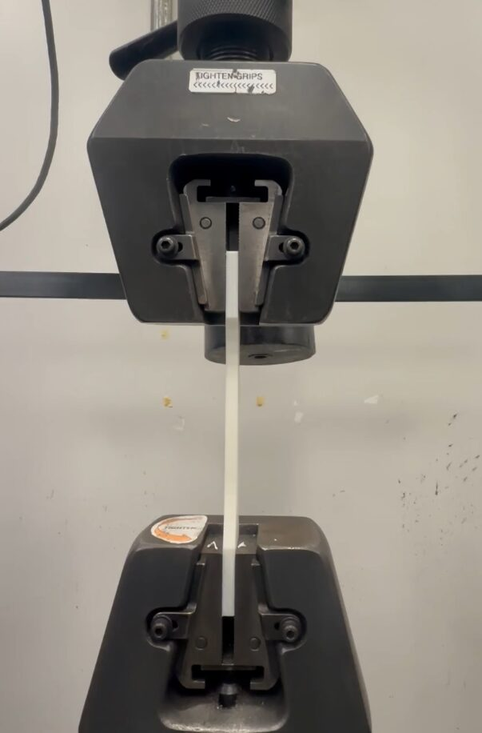
Designed and executed a full factorial experiment investigating how internal FDM print speed affects the tensile behavior of three common 3D printing filaments: PLA, PETG, and ASA. Fabricated 60 ASTM D638 dog bone specimens across 15 treatment combinations using a Bambu P1S printer, which was varied from 50 to 800 mm/s. Prior to testing, performed dimensional verification on all 60 specimens using digital calipers and stored them in airtight containers to minimize moisture absorption.
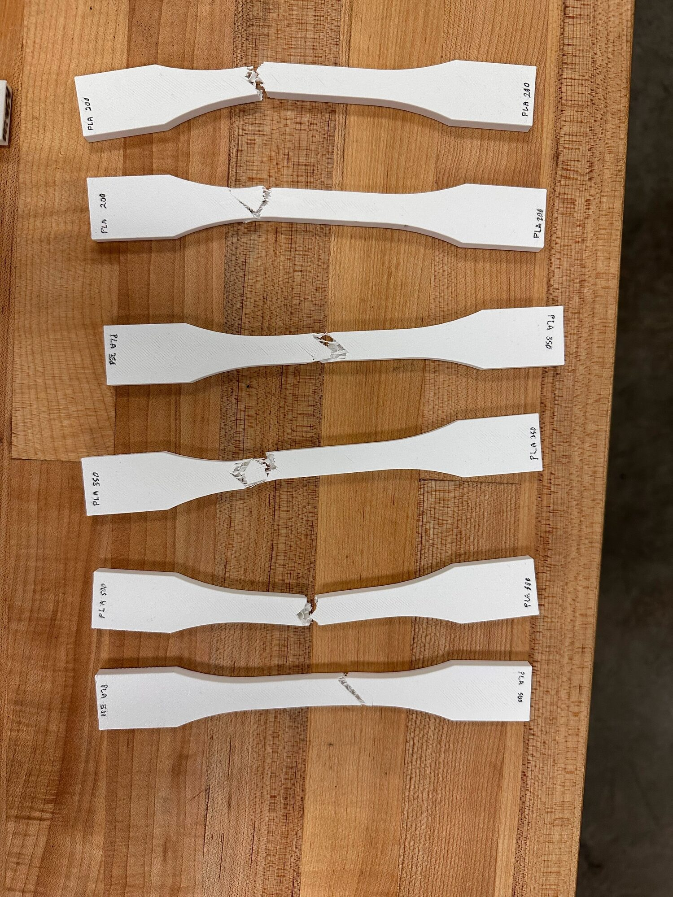
Conducted uniaxial tensile testing on a 20 lbf Instron 5500 machine, calibrating the load cell against five known static loads and deriving a linear correction function applied to all raw force data. Converted force-displacement outputs into stress-strain curves in MATLAB, using individually measured cross-sectional areas per specimen to reduce systematic dimensional error. Performed full uncertainty propagation using root-sum-square (RSS) methods, accounting for load cell resolution, crosshead encoder precision, and caliper measurement variability across all 60 specimens.
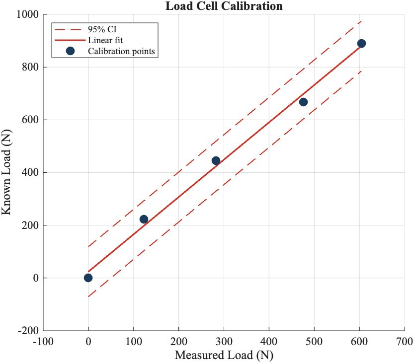
Conducted three layers of statistical analysis at a 5% significance level. Results showed that material choice was the dominant factor controlling both UTS and ductility, while print speed alone produced no statistically significant main effect. However, the material-speed interaction was significant, with PLA showing a clear and statistically significant decrease in ductility at higher speeds.
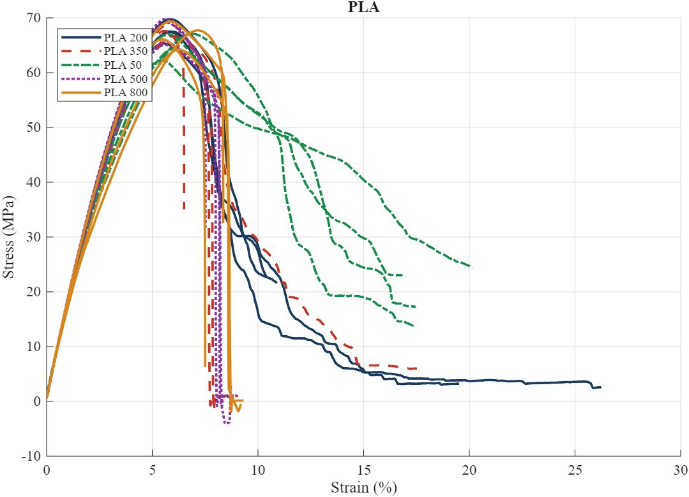
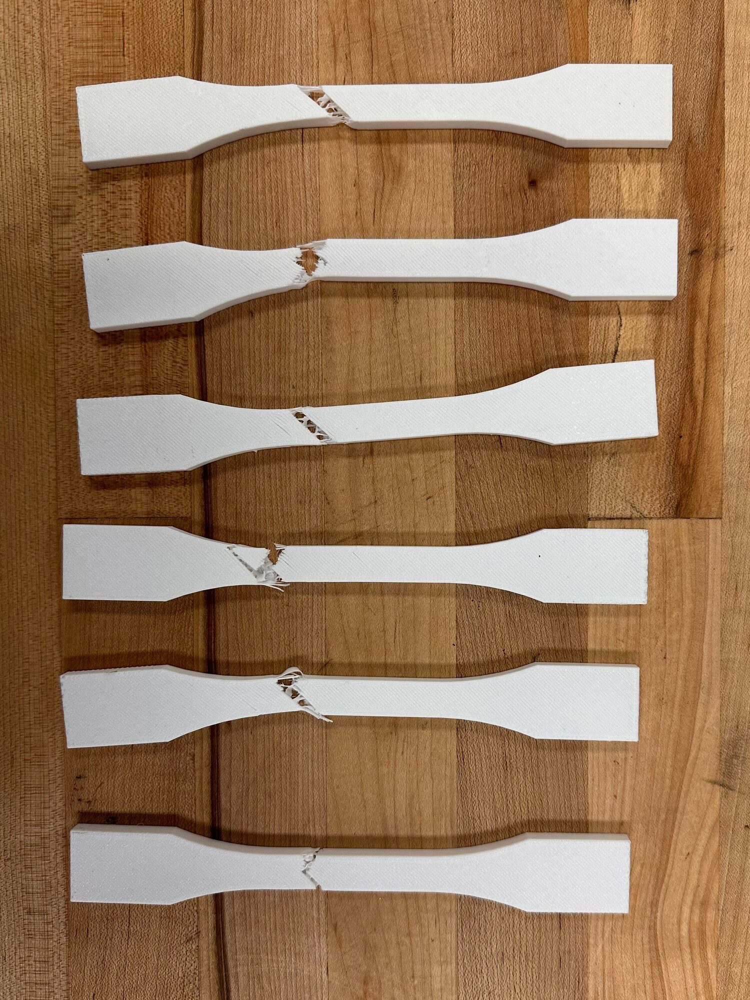
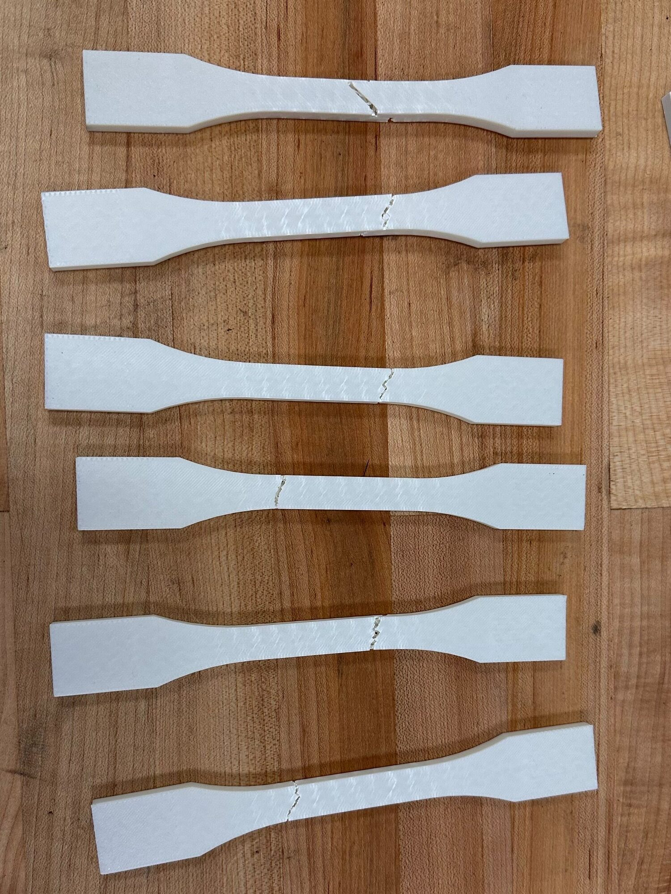
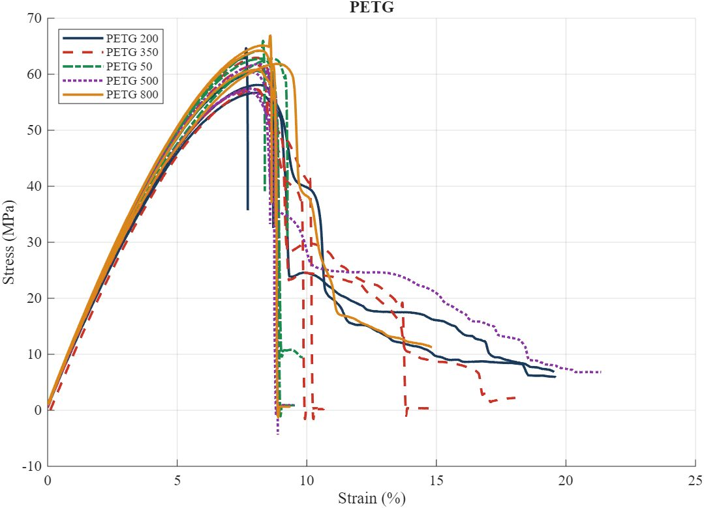
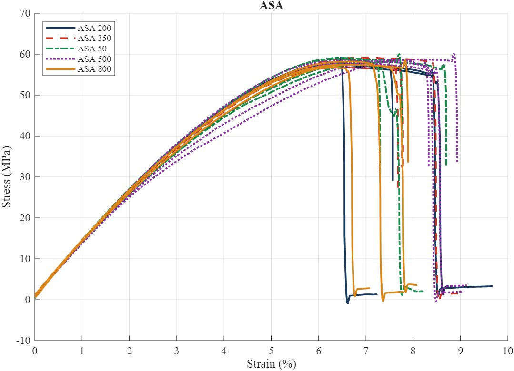
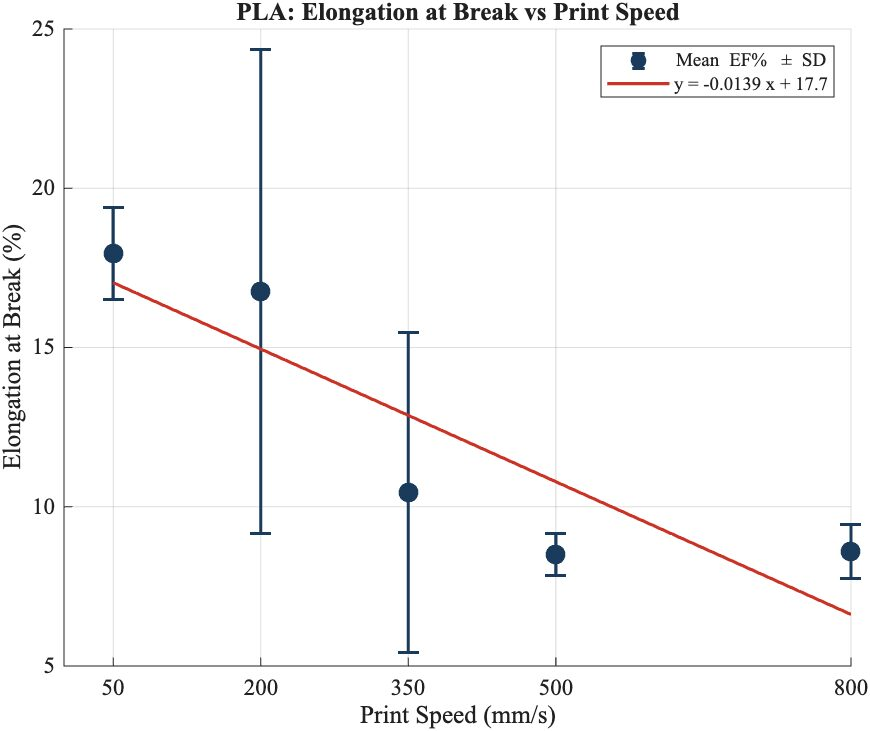
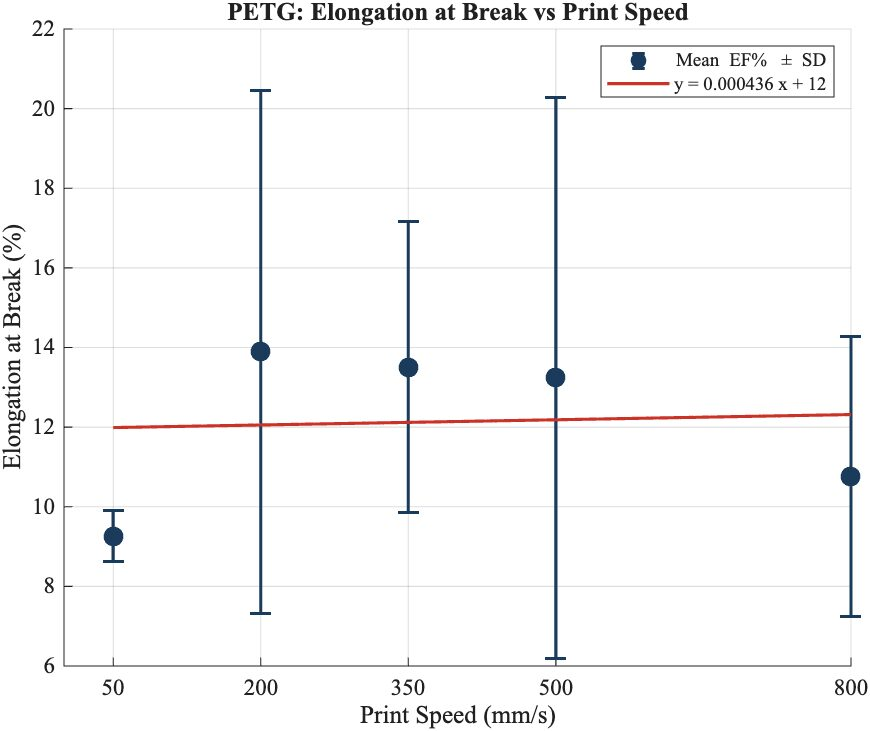
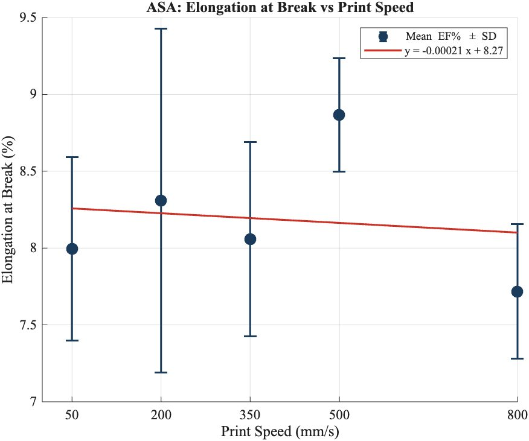